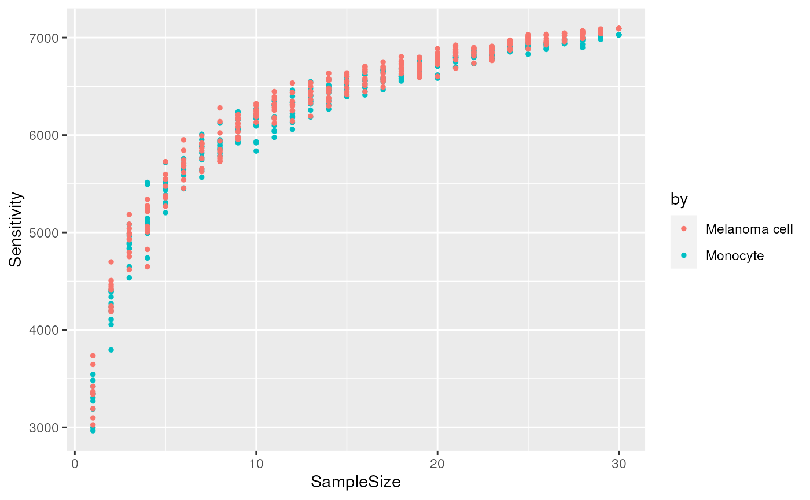

vignettes/reporting_missing_values.Rmd
reporting_missing_values.RmdThis vignette demonstrates how to use scp to report
missing values, following our recommendations in Vanderaa and Gatto (2023). Briefly, we recommend
reporting at least 4 metrics:
We will also demonstrate how to estimate total sensitivity when the number of samples is too low and how to report data consistency using the distribution of Jaccard indices.
In this vignette, we will assume you are familiar with the
scp framework. If this is not the case, we suggest you
first read the introduction
vignette.
First, we load the scp package and retrieve a real-life
dataset from the scpdata package.
Next, we reduce the size of the dataset to the 30 first acquisitions. This allows for a fast execution of the code for this vignette while still being a representative demonstration on a real dataset. We also keep only the feature annotations that will be used later in the vignette.
leduc <- leduc[, , 1:30]
#> Warning: 'experiments' dropped; see 'metadata'
#> harmonizing input:
#> removing 8057 sampleMap rows not in names(experiments)
#> removing 1872 colData rownames not in sampleMap 'primary'
leduc <- selectRowData(leduc, c(
"Sequence", "Leading.razor.protein", "Reverse",
"Potential.contaminant", "PEP"
))This is the actual minimal processing: 1. filtering contaminant and low-quality features 2. replacing zeros by missing values 3. keep only samples that correspond to single cells 4. remove the feature absent in all samples.
leduc <- filterFeatures(leduc, ~ Reverse != "+" &
Potential.contaminant != "+" &
PEP < 0.01) ## 1.
#> 'Reverse' found in 30 out of 30 assay(s)
#> 'Potential.contaminant' found in 30 out of 30 assay(s)
#> 'PEP' found in 30 out of 30 assay(s)
leduc <- zeroIsNA(leduc, i = names(leduc)) ## 2.
leduc <- filterNA(leduc, i = names(leduc), pNA = 0.9999)
leduc <- subsetByColData( ## 3.
leduc, leduc$SampleType %in% c("Monocyte", "Melanoma cell")
)
leduc <- dropEmptyAssays(leduc) ## 4.Next, we build the peptide identification matrix, that is a matrix with single cells as columns and peptides as rows. We first need data at peptide level, hence we aggregate the peptide to spectrum match data to peptide data. We use a counting functions for aggregation, meaning that we generate spectral count data for peptides.
leduc <- aggregateFeatures(
leduc, i = names(leduc),
name = paste0("spectral_counts_", names(leduc)),
fcol = "Sequence",
fun = MsCoreUtils::colCounts
)Then, we join all runs in a single large assay.
leduc <- joinAssays(
leduc, i = grep("^spec", names(leduc)),
name = "spectral_counts"
)Once all assay are joined, we extract that assay and replace any observed count by 1 and any missing value by 0. This is the peptide identification matrix.
We can now compute the metrics of interest. We recommend computing these for each cell type separately, since biological properties specific to the cell type could influence the outcome.
(metrics <- sapply(unique(ids$SampleType), function(st) {
x <- assay(ids)[, ids$SampleType == st]
c(
LocalSensitivityMean = mean(colSums(x != 0)),
LocalSensitivitySd = sd(colSums(x != 0)),
TotalSensitivity = sum(rowSums(x) != 0),
Completeness = mean(x != 0),
NumberCells = ncol(x)
)
}))
#> Monocyte Melanoma cell
#> LocalSensitivityMean 3403.6598985 3407.3589744
#> LocalSensitivitySd 202.2523708 203.5432130
#> TotalSensitivity 7111.0000000 7111.0000000
#> Completeness 0.4786472 0.4791673
#> NumberCells 197.0000000 195.0000000What about proteins? To generate the same table for proteins, we need to rebuild an identification matrix for peptides. In this case, you simply need to change the aggregation call
leduc <- aggregateFeatures(
leduc, i = names(leduc),
name = paste0("spectral_counts_", names(leduc)),
fcol = "Sequence",
fun = MsCoreUtils::colCounts
)to
leduc <- aggregateFeatures(
leduc, i = names(leduc),
name = paste0("spectral_counts_", names(leduc)),
fcol = "Leading.razor.protein",
fun = MsCoreUtils::colCounts
)All code that follows aggregation is exactly the same.
On top of the four metrics computed in the previous section, we also recommended exploring the jaccard indices and assessing whether enough single cells are acquired to accurately estimate the total sensitivity.
We first need a custom function that computes the Jaccard index for all pairs of columns given an identification matrix. The Jaccard index in this context is the number of features shared by two columns divided by the number of distinct features identified in any of the two columns. This provides a good measure of how consistent the identifications are across single-cells.
jaccardIndexFromIdMatrix <- function(idMatrix) {
vectorSizes <- colSums(idMatrix)
pwVectorSizes <- sapply(vectorSizes, function(x) vectorSizes + x)
unionSize <- crossprod(idMatrix)
jacc <- unionSize / (pwVectorSizes - unionSize)
jacc[upper.tri(jacc)] ## jacc is a symmetric matrix
}Next we plot the distribution of the jaccard indices. Again, biological differences between cell types may decrease the consistency between single cells. Therefore, we compute and plot the Jaccard index for each cell type separately.
par(mfrow = c(2, 1))
for (st in unique(ids$SampleType)) {
x <- assay(ids)[, ids$SampleType == st]
hist(jaccardIndexFromIdMatrix(x), main = st,
xlab = "Jaccard index", breaks = 50)
}
The Jaccard index is mainly distributed across 50 and 60 %, meaning that about half of the features are consistently found across single-cells within the same cell type. Note also that some pairs of cells have perfect consistency. These are pairs of cells from the same acquisition runs that were multiplexed together with TMT labelling.
To assessing whether we can accurately estimate the total
sensitivity, we generate a cumulative sensitivity curve (CSC). The
functions below allows to generate that curve provided an identification
matrix. The algorithm samples columns from the matrix in gradually
increasing numbers (determined by nsteps). Each sampling is
repeated niters times to account for the stochasticity of
the approach.
getSteps <- function(assays, nsteps) {
maxn <- length(assays)
steps <- seq(1, maxn, length.out = min(maxn, nsteps))
round(steps)
}
groupSamples <- function(x, by) {
sapply(unique(by), function(i) {
ifelse(rowSums(x[, by == i]) == 0, 0, 1)
})
}
cumulativeSensitivity <- function(idMatrix, niters, nsteps,
groupSamplesBy = NULL) {
out <- list()
if (!is.null(groupSamplesBy)) {
idMatrix <- groupSamples(idMatrix, by = groupSamplesBy)
}
for (n in getSteps(colnames(idMatrix), nsteps)) {
for (i in 1:niters) {
sel <- sample(colnames(idMatrix), n)
s <- sum(rowSums(idMatrix[, sel, drop = FALSE]) != 0)
out <- c(
out,
list(data.frame(
i = i,
NumberSamples = n,
Sensitivity = s
))
)
}
}
do.call(rbind, out)
}Again, we explore the csc for each cell type separately. Note that we
group the cells by acquisition run (Set).
csc <- lapply(unique(ids$SampleType), function(st) {
x <- ids[, ids$SampleType == st]
out <- cumulativeSensitivity(
assay(x), niters = 10, nsteps = 30, groupSamplesBy = x$Set
)
out$SampleType <- st
out
})
csc <- do.call(rbind, csc)Next, we plot the cumlulative sensitivity for each cell type separately.
library("ggplot2")
(plCumS <- ggplot(csc) +
aes(x = NumberSamples, y = Sensitivity, colour = SampleType) +
geom_point(size = 1) +
labs(y = "Sensitivity", x = "Number of MS acquisitions"
) +
theme_minimal() +
theme(
legend.position = "top",
axis.title.x = element_text(vjust = 0)
))
The cumulative sensitivity does not plateau, although it almost reaches it. This means that we slightly underestimate the total sensitivity. This is because we have subset the data at the beginning of the script, and including more datasets allows to reach the plateau.
We will now predict the total sensitivity. Since both cell types exhibit the same trends, we will perform the prediction for the two cell types combined. We first fit an asymptotic regression model to assess the relationship between the sensitivity and the number of MS runs. Then, we predict the response and plot these preduction on the previous graph.
AsymptoticRegressionModel <- nls(
formula = Sensitivity ~ SSasymp(NumberSamples, Asym, R0, lrc),
data = csc,
weights = csc$NumberSamples^2 ## data is heterorscedastic
)
predictedSensitivity <- data.frame(
NumberSamples = 1:max(csc$NumberSamples)
)
predictedSensitivity$Sensitivity <- predict(
AsymptoticRegressionModel,
newdata = predictedSensitivity
)
plCumS +
geom_line(data = predictedSensitivity, colour = "red")
We finally compute the predicted total sensitivity, that is sensitivity if we had an infinite number of samples.
predict(
AsymptoticRegressionModel,
newdata = data.frame(NumberSamples = Inf)
)
#> [1] 7294.176
#> attr(,"gradient")
#> Asym R0 lrc
#> [1,] 1 0 NaNThe total sensitivity is predicted to be 7282 peptides. Compared to the total sensitivity of 7111 reported in the previous section, we underestimate the total sensitivity by about 150 peptides.
citation("scp")
#> To cite the scp package in publications use:
#>
#> Vanderaa Christophe and Laurent Gatto. Revisiting the thorny issue of
#> missing values in single-cell proteomics. arXiv:2304.06654; doi:
#> https://doi.org/2304.06654 (2023).
#>
#> Vanderaa Christophe and Laurent Gatto. The current state of
#> single-cell proteomics data analysis. Current Protocols 3 (1): e658.;
#> doi: https://doi.org/10.1002/cpz1.658 (2023).
#>
#> Vanderaa Christophe and Laurent Gatto. Replication of Single-Cell
#> Proteomics Data Reveals Important Computational Challenges. Expert
#> Review of Proteomics, 1–9 (2021).
#>
#> To see these entries in BibTeX format, use 'print(<citation>,
#> bibtex=TRUE)', 'toBibtex(.)', or set
#> 'options(citation.bibtex.max=999)'.This vignette is distributed under a CC BY-SA license license.